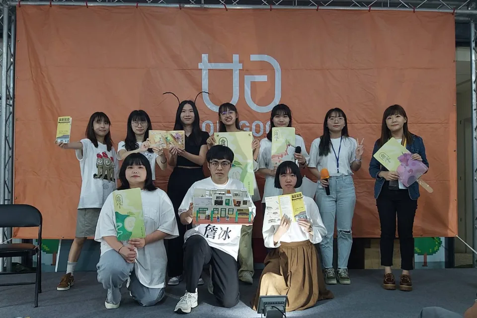
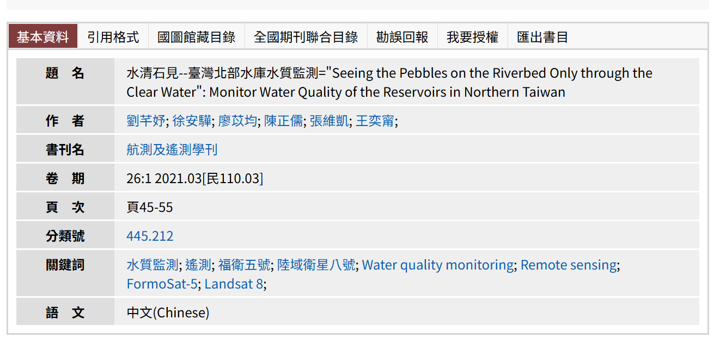
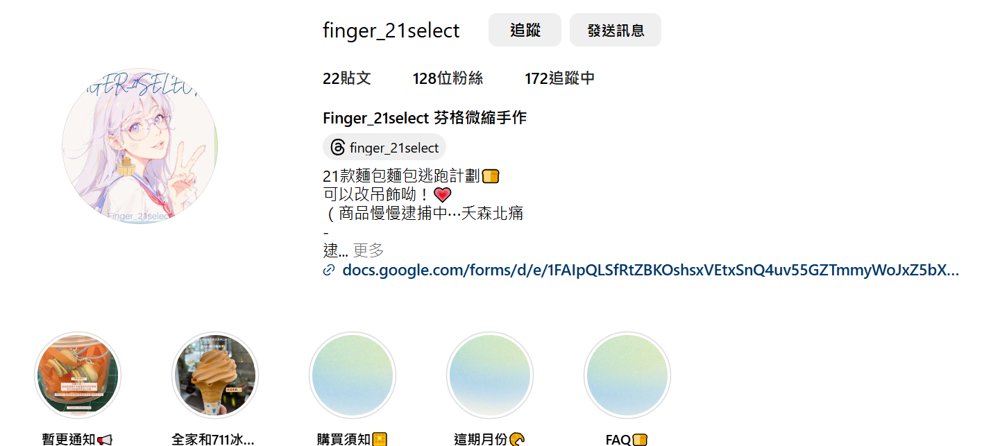

學歷
代表事蹟
書卷獎: 企管班排第三名 (大三上)
專案: 故居記藝 詩畫展(詹冰╳詹益秀╳詹前裕)
比賽: 2020福衛五號小論文比賽全國第一名
期刊: 航測及遙測學刊 水清石見--台灣北部水庫水質監測



自我介紹
我的名字是廖苡均，中原大學企業管理學系。有經營自己的手作商店，閒暇之餘也會做甜點和麵包。
語言
英文、日文、韓文
程式語言
其他技能
Photoshop
Illustrator
Excel VBA